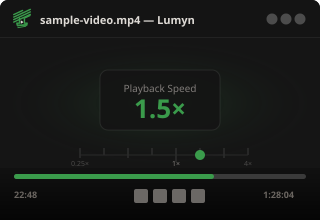
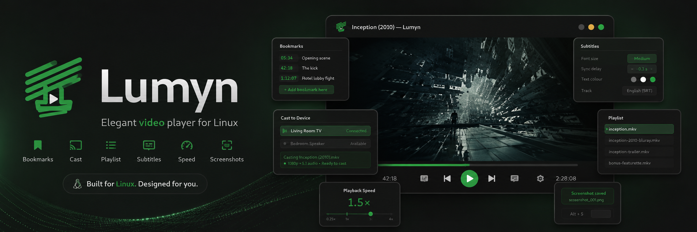
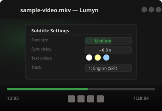
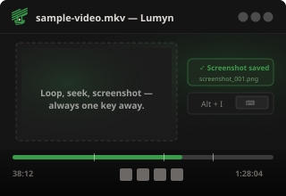
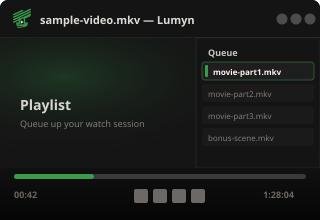
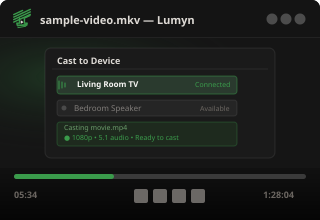
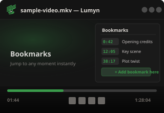
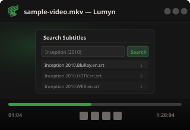

Subtitle Delay
Subtitle DelayPowered by mpv
Native playback through mpv, packaged with release builds for a smoother first run.

 Lumyn
Lumyn
Desktop media player
A quiet, fast local video player with a focused interface, mpv playback, subtitle tools, and the controls you expect close at hand.
What it does

Native playback through mpv, packaged with release builds for a smoother first run.

Load subtitle files, pick embedded tracks, adjust appearance, and tune sync delay.

Hover controls, seek shortcuts, speed controls, screenshots, looping, and track switching.

Avalonia UI with a compact custom title bar and a simple local-media workflow.

Stream to nearby Chromecast devices with automatic discovery, format support detection, and full playback control.

Automatically resume playback from where you left off, and create bookmarks to jump to your favourite moments instantly.

Find matching subtitles from inside the player and download the right file without leaving your session.

Latest release
Pick the installer that matches your desktop. Ubuntu and Windows users can install from their app stores or download a standalone package.
Install from the Ubuntu App Center, or download the latest Debian package.
Snap
sudo snap install lumyn
PPA (Ubuntu / Debian)
sudo add-apt-repository ppa:piyushdoorwar/lumyn
sudo apt update
sudo apt install lumyn
Install via the Microsoft Store, or download the standalone installer.
PowerShell
Fetching download URL…
Choose the build that matches your Mac chip.
Apple Silicon (arm64)
Fetching download URL…
Intel (x64)
Fetching download URL…